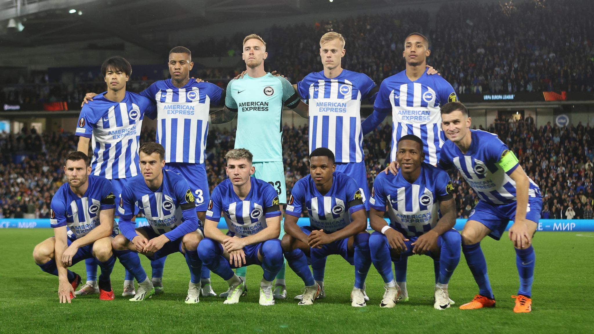

| Брайтон | ||||
| Февраль | ||||
| Дата | Турнир | Соперник | Счёт | Зрители |
| 01.02.2025|15:30 | Англия. Премьер-лига | Ноттингем Форест | 7 : 0 Ноттингем Форест-Брайтон | 30164 |
| 08.02.2025|23:00 | Англия. Кубок | Челси | 2 : 1 Брайтон-Челси | 23279 |
| 14.02.2025|23:00 | Англия. Премьер-лига | Челси | 3 : 0 Брайтон-Челси | - |
| 22.02.2025|18:00 | Англия. Премьер-лига | Саутгемптон | превью | - |
| 25.02.2025|22:30 | Англия. Премьер-лига | Борнмут | превью | - |
| Март | ||||
| Дата | Турнир | Соперник | Счёт | Зрители |
| 02.03.2025|16:45 | Англия. Кубок | Ньюкасл | превью | - |
| 08.03.2025|18:00 | Англия. Премьер-лига | Фулхэм | превью | - |
| 15.03.2025|18:00 | Англия. Премьер-лига | Манчестер Сити | превью | - |